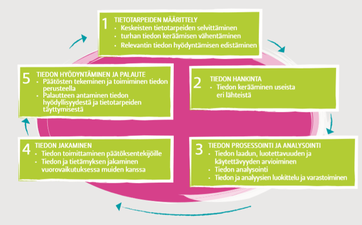
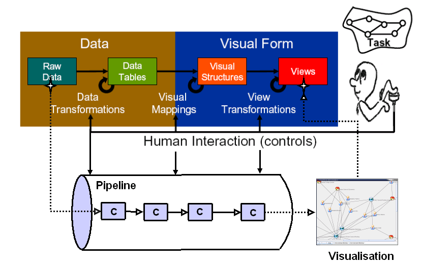
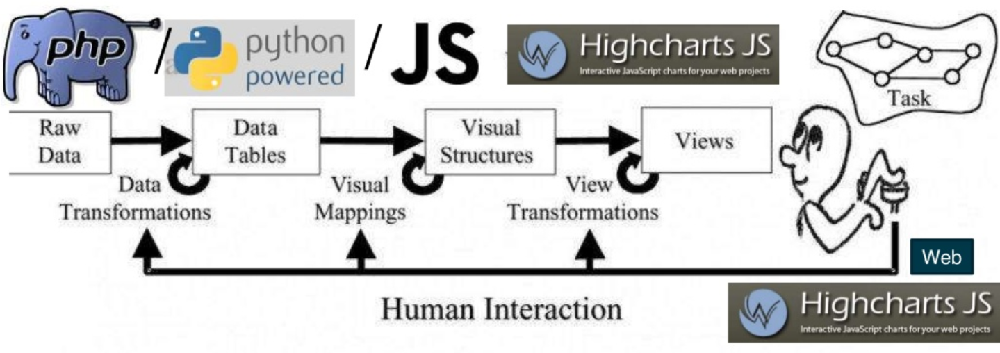
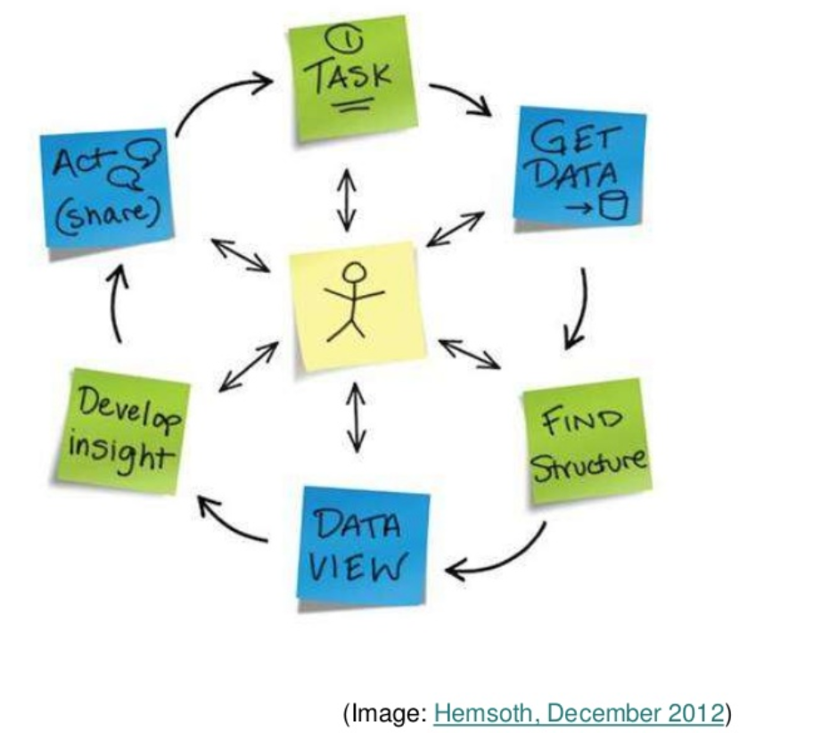
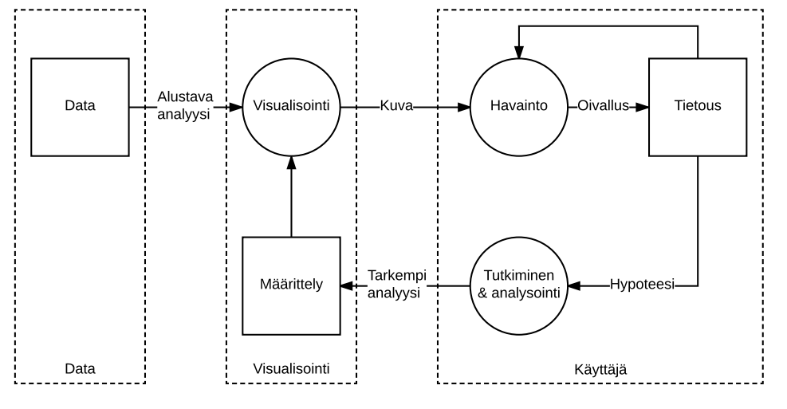
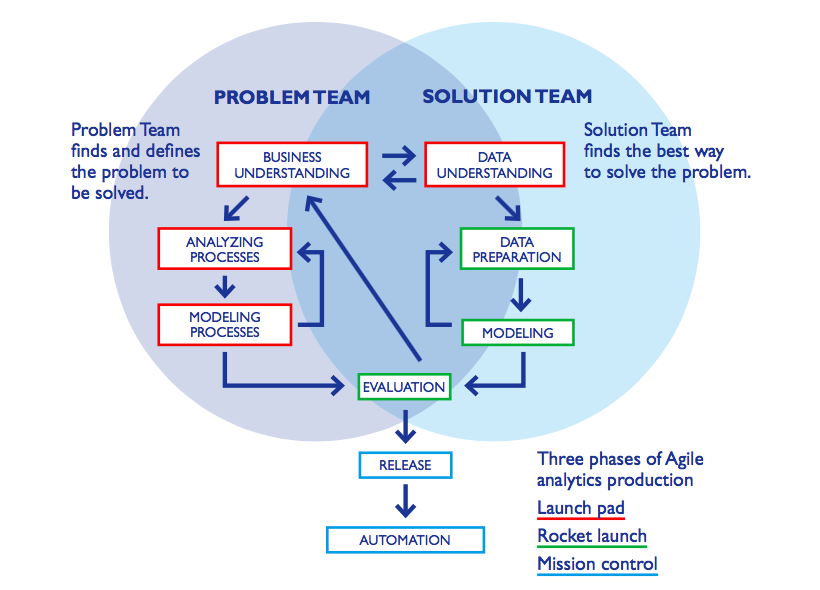

Koostapalvelut ja visuaalinen analytiikka
5.2.2019
Johdattelua
Tähän mennessä on käsitelty lähinnä yksittäisien järjestelmien arkkitehtuurin ja vuorovaikutuksen toteuttamista.
Varmista, että osaat tarvittaessa kuvata REST-mallin perusajatuksen sekä antaa periaatteellisen kuvauksen REST-mallin mukaisesti toimivasta järjestelmästä.
Rest-arkkitehtuuri tyyliä noudattava HATEOAS-periaate tarkastelee vuorovaikutusta järjestelmien välillä yleisemmällä tasolla.
(Hypermedia as the engine of application state, Fielding 2000)
Yhdistetty data
- Web on pullollaan dataa ja sitä on Webin alkuajoista lähtien sovellettu myös ohjelmallisesti.
- HTML-muotoisen tiedon ryömimiseen (crawling) ja raapimiseen (scraping) liittyy kuitenkin erilaisia teknisiä ja esimerkiksi tekijänoikeuksiin liittyviä ongelmia.
- Semanttisen Webin ajatuksiin perustuva yhdistetty data
mahdollistaa datan ohjelmallisen selaamisen ja lukemisen.
LinkedData is to spreadsheets and databases what the Web of hypertext documents is to word processor files.
(esw.w3.org/LinkedData)
- Use URIs as names for things
- Use HTTP URIs so that people can look up those names.
- When someone looks up a URI, provide useful information.
- Include links to other URIs. so that they can discover more things.
Yhdistetty julkinen data Suomessa
Yhdistetty julkinen data on hyvin ajankohtainen asia myös Suomessa:
- Vuonna 2015 alkanut 6Aika-hanke nojaa vahvasti avoimeen dataan.
- Helsinki Region Infoshare ja Open Data Tampere ovat yhdessä avanneet yli 1000 suomalaista datasettiä.
- Aiheeseen liittyvää tutkimus- ja kehitystyötä on aikaisemmin tehty esimerkiksi
Linked Data Finland -hankkeessa.
-
Kiinnostus ja paine tietosisältöjen avaamiseen tarkoittanee sitä, että tulevina vuosina
koostepalveluiden kehittäjien ja muiden ohjelmallisen sisällönhallinnan osaajien käyttöön
tulee kosolti lisää mielenkiintoista aineistoa.
-
Kuten viime viikolla totesimme, myös yritykset tarjoavat API-rajapintoja omaan dataansa.
Avoin data: resursseja ja yhteisöjä
Koostepalvelut
Koostepalvelut esittelevät tavan luoda uusia toiminnallisuuksia ja palveluita olemassa olevia tietosisältöjä ja komponentteja yhdistelemällä
Koostepalvelut
Koostepalvelut (mashup) muodostavat olennaisen osan nykyaikaista Web-palvelutarjontaa:
- Koostepalvelut koostavat, yhdistelevät, jalostavat ja rikastavat eri lähteistä kerättyä tietoa ja esittävät sen ilmaisuvoimaisilla tavoilla.
- Keskeisessä roolissa koostepalvelujen toteuttamisessa ovat verkkopalvelujen tarjoamat rajapinnat (Web API),
joiden tuella tietoja voidaan ohjelmallisesti siirtää verkkopalvelujen välillä.
- Erityisesti erilaiset paikkatiedon ja karttojen yhdistelmät ovat edelleen erityisen ajankohtaisia.
Esimerkki 1: Hälytykset kartalla
Esimerkki 2: Emojien käyttö Twitterissä
Koostamisen tasot
Koostepalvelut viittaavat tapaan toteuttaa verkkopalvelujen toiminnallisuuksia
olemassa olevia resursseja koostamalla.
Yleistymässä olevan näkemyksen mukaan
koostamista tapahtuu kolmella tasolla (vrt.
Yu, Benatallah, Casati ja Daniel, 2008):
- Sisällön koostaminen: RSS/Atom, Web APIt (REST), HTML-muotoisen tiedon jalostaminen (screen scraping)
- Sovelluslogiikan koostaminen: datan koostaminen, suodattaminen ja muuntaminen (esimerkiksi Google Fusion Tables);
datan käsittely selaimessa, kommunikointi selaimen ja palvelimen välillä
(vrt. jQuery UI)
- Käyttöliittymien koostaminen: Google Maps ja Earth, YouTube, d3.js,
vimpaimet.
Monipuolisemman koostamisen mahdollistajat
DOM - Document Object Model
Raketeistetut dokumentit on mahdollista esittää puumallina, jonka objekteja voidaan hakea, tutkia ja manipuloida
Esimerkiksi koodikliniikan JS manipulaatio tai 2. luennon JQuery manipulaatio
Entäs kun koostepalvelua skaalataan?
Esimerkiksi erilaiset BI-palvelut/sovellukset
Tärkeässä roolissa kysymys, mistä tietoa haetaan
Koostepalvelut ja informaation visualisointi
Koostepalvelut esittelevät nykyaikaisen tavan toteuttaa informaation visualisointia
Informaation visuaalisointi: periaatteet
Koostepalvelujen taustalla lymyävät informaation visualisoinnin perusajatukset.
Koostepalveluiden kehittämistä voidaan lähestyä informaation visualisoinnin periaattein:
- Historoitsija Alfred Crosby
(1997): visualisointi on mittauksen
ohella tärkein nykyaikaisen tieteen räjähdysmäisen kehityksen tekijä
- Informaation visualisoinissa yleisesti on tavoitteena luoda tarkastelijalle
ilmaisuvoimainen yleisnäkymä tarkasteltavaan informaatiokokonaisuuteen
(Ware, 2004).
- Vuorovaikutteisuuden merkitys on suuri: "interaction is particularly important in InfoVis: [...]
Interaction allows the user to implicitly form mental models of the correlations and relationships
in the data, through recognition of patterns, marking or focusing in on those patterns,
forming mental hypotheses and testing them, and so on."
(Kosara, Hauser ja Gresh, 2003)
Informaation visualisointi prosessina 0/3

Kuvalähde: (Laihonen et al 2013 )
Informaation visualisointi prosessina 1/3

Kuvalähde: (Card ja muut, 1999; Miksch, 2005)
Informaation visualisointi prosessina 1/3

Harjoitustyö voisi näyttää esimerkiksi tältä
Informaation visualisointi prosessina 2/3

Informaation visualisointi prosessina 3/3

Kuvalähde: (Kaittola 2017)
Vielä hieman eri näkökulmasta

CRISP-DM eli Cross-industry standard process for data-mining